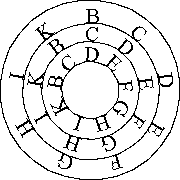

BOOK OF THE SEVEN PLANETS
Blessed Raymond LULL
 Lord GOD, with your Virtue and in your honor here begins this new treatise on astronomy
Many people desire to know the truth about the natural secrets of the heavenly bodies through the art of astronomy, which is very difficult to learn and the judgments made with it have oftentimes proved false. So I, Raymond, with the Art that is general for all sciences, now propose to investigate and clarify the nature and secrets of the heavenly bodies and to find out what things can cause judgments made with the art of astronomy to fail more often than not.We also want to seek out and find new ways to discover several natural secrets leading to a greater knowledge of astronomy and of astronomical judgments. Moreover, we want to write this book for the benefit of leaders and magnates so they can use it to be warned against some astronomers who deceive them with the false judgments that they derive from the heavenly bodies, because the things we are about to say in this treatise should allow them to detect the deception that some false astronomers are preparing for them, as well as the deception wrought with the art of geomancy.
HOW THIS TREATISE IS DIVIDED
Astronomy is divided into two parts: the first part deals with the movements, conjunctions and encounters of the planets in the signs. The second part deals with judgments that can be drawn from the conjunctions and encounters of the planets in the signs. The whole science of astronomy is comprised in these two constituent parts.THE FIRST PART OF ASTRONOMY
WE DIVIDE THIS PART INTO FIVE PARTS:
PART ONE IS ABOUT THE PRINCIPLES OF ASTRONOMY
PART TWO IS ABOUT THE FIGURE OF ASTRONOMY
PART THREE IS ABOUT THE CONJUNCTIONS OF PLANETS AND SIGNS
PART FOUR CONTAINS THE OBJECTIONS WE RAISE AGAINST SOME OPINIONS HELD BY ASTRONOMERS
PART FIVE, AS THE LAST PART, DEALS WITH QUESTIONSPART ONE, THE PRINCIPLES OF ASTRONOMY
1. THE FIRST PART deals with the ancient principles of astronomy
2. THE SECOND PART deals with the principles of Raymond's Art as applied by him to the ancient principles of astronomy, in order to understand and discover the truth in the ancient principles of astronomy by discovering and showing their nature and their secrets through the principles of his Art .1. ON THE ANCIENT PRINCIPLES OF ASTRONOMY
This part is divided into two parts: 1. The first part is about the twelve celestial signs. 2. The second part is about the seven planets. And now for the first part...
Next to the twelve signs
To contents of the Book of Seven Planets
Top of page
Contents of Other Books